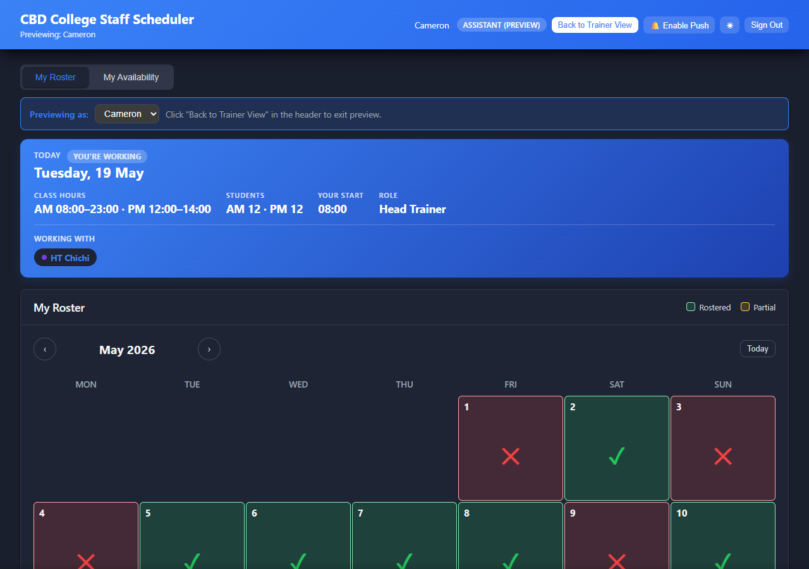
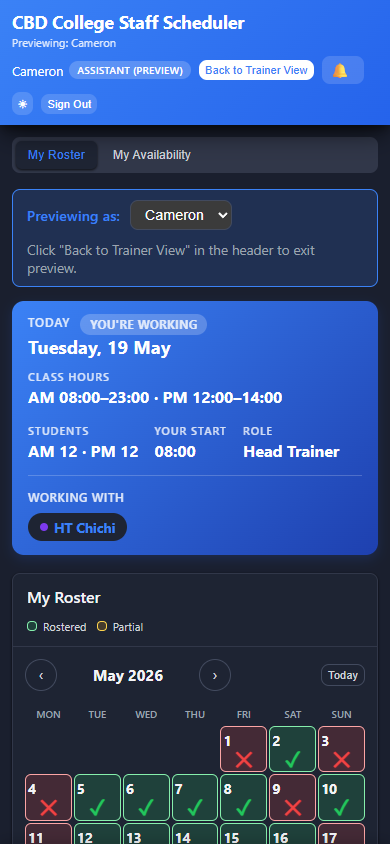
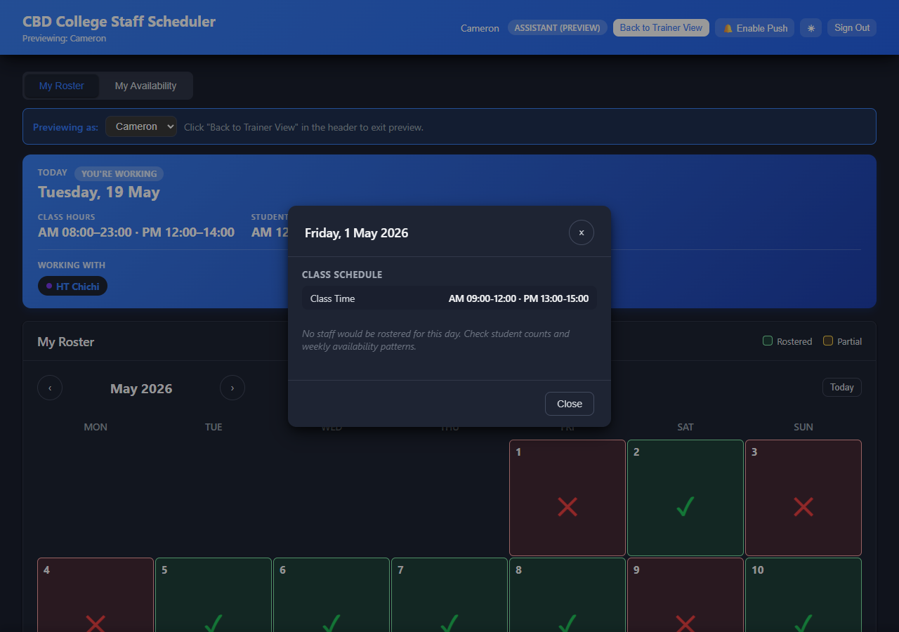
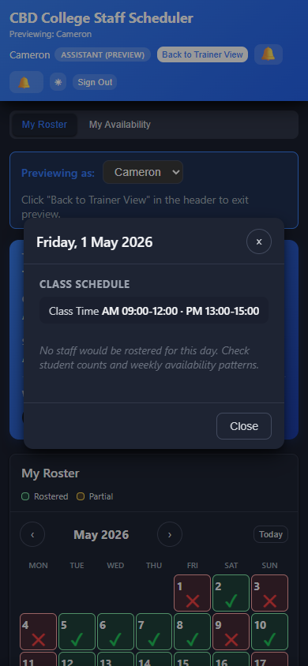
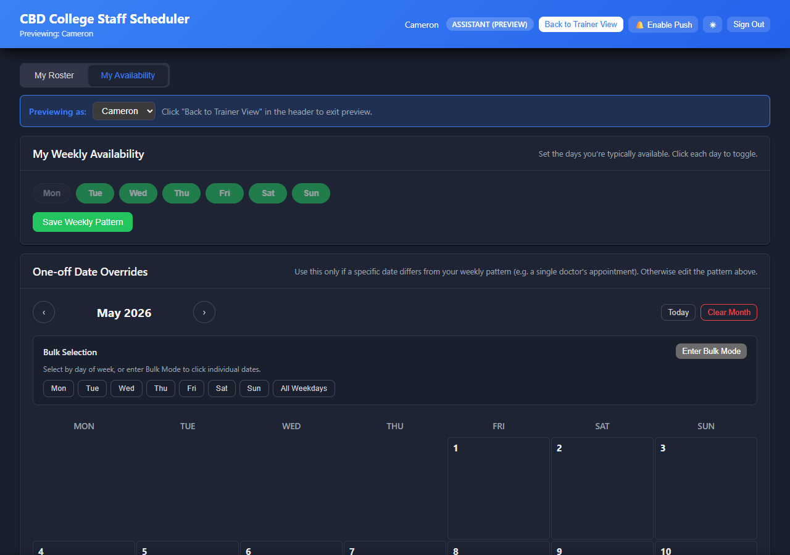
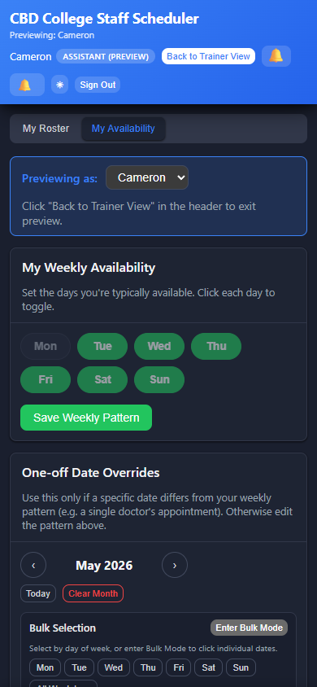

To make this into a PDF: press Ctrl+P and choose Save as PDF. In the print options, switch on Background graphics so the colours print correctly.
User Manual
CBD College Staff Scheduler
Assistant Guide
Step-by-step instructions for checking your roster, seeing when your next shift is, and telling the team when you can work. Every step shows what it looks like on a computer and on a phone.
What's inside
Signing in for the first time
Saving the app to your phone
Turning on phone notifications
What every button on the top bar does
Reading your roster calendar
Checking when your next shift is
Looking up the details for one day
The My Availability screen
Telling the team when you can & can't work
Getting notifications
Changing the colours (dark / light)
Signing out & using more than one device
If something isn't working
01Signing in for the first time
A trainer will create your account and pass on your email and a temporary password. The app is at cbdcollege-scheduler.pages.dev.
Computer Sign-in screenPhone Sign-in screen
How to sign in
1
Open the app's website (phone or laptop, either's fine).
2
Type the email your trainer gave you, then the password.
3
Tap the blue Sign In button.
Don't forget to change your password Ask your trainer to set you a new password that only you know — the temporary one shouldn't stay in use.
02Saving the app to your phone
This puts a CBD Scheduler icon on your home screen so it opens like a normal app. It also lets your phone send you notifications. Strongly recommended.
Android phones
1
Sign in. You'll see a button at the top called 📱 Install.
2
Tap it.
3
Your phone asks "Install this app?" — tap Install.
4
The app's icon will appear on your home screen. Use that icon to open the app from now on.
iPhones
1
Sign in. Tap the 📱 Install button.
2
A screen with instructions pops up. Look at the bottom of Safari for the Share icon (a square with an arrow going up).
3
Tap Share, then scroll the menu and tap Add to Home Screen.
4
Tap Add in the top corner.
5
From now on, open the app by tapping the CBD Scheduler icon on your home screen — not through Safari.
03Turning on phone notifications
Lets your phone buzz when your roster changes or a trainer sends you a message.
1
Open the app (iPhone users — open it from the home-screen icon, not Safari).
2
Tap the button at the top called 🔔 Enable Push.
3
Your phone will ask "Allow notifications?" — tap Allow.
4
You'll see a small message that says "Mobile push enabled" and the Enable Push button will disappear.
You're all set From now on, your phone will buzz whenever your roster changes — even if the app's closed.
04What every button on the top bar does
Your name + ASSISTANT badge — just confirms you're signed in.
📱 Install — saves the app to your phone's home screen. Only shows on phones, and only until you've installed it.
🔔 (bell) — your messages. A red number means you have unread ones.
🔔 Enable Push — turns on phone notifications. Disappears once you've turned them on.
🌙 or ☀️ — swaps between dark and light colours.
Sign Out — logs you out.
Two tabs in the app
My RosterMy Availability
My Roster — your schedule. You can look but not change it.
My Availability — where you tell trainers which days you can and can't work.
05Reading your roster calendar
A whole-month view of every day, with a clear symbol showing whether you're working.
Computer My Roster — every day in detail

Phone My Roster — just a tick or cross

What each symbol means
✓ Green tick — you're working that day✕ Red cross — there's a class but you're not on it Blank — no class that day Blue ring — today
Moving around the calendar
1
The ‹ and › buttons step you back and forward one month.
2
The Today button jumps straight back to this month.
3
Tap any day to see all the details.
06Checking when your next shift is
The blue box at the top of My Roster — the Next Shift card — tells you exactly when you're next working, no scrolling needed.
What you'll see
Today — today's date, today's class times, how many students, and either YOU'RE WORKING or NOT NEEDED.
Next shift — when it is (Tomorrow, In 3 days, etc.), the class times, your own start time, and whether you're working as Head Trainer or Assistant.
Working with — who else is on that day. The Head Trainer is shown first.
What if it says "You're not currently rostered…"? The trainer may not have rostered you for upcoming days yet, or you've marked yourself unavailable. Check the My Availability tab to make sure your availability is up to date.
07Looking up the details for one day
Tap any day on the calendar and a popup shows you everything about that day.
Computer Day details popup

Phone Day details popup

What's in the popup:
The day name and the full date.
The AM and PM class times.
How many students are in each class.
A CAP badge if the class is full.
Everyone working that day, with the Head Trainer at the top.
Your own start time, if you're working.
08The My Availability screen
This is where you tell trainers which days you can work and which you can't. The app uses this when it picks who works each day, so it's important to keep it up to date.
Computer My Availability

Phone My Availability

What the colours mean
Green — you said you're available Red — you said you're not available Blank — you haven't said either (treated as available)
09Telling the team when you can & can't work
One day at a time
1
Tap the day on the calendar.
2
Choose Available or Not Available.
3
You can add a short note if you like (for example, "doctor's appointment").
4
Tap the green Save button.
5
To change your mind later, tap the same day and tap Clear.
Setting a repeating pattern (e.g. "available every Monday")
If your availability follows a weekly pattern, tap the Patterns button at the top of the screen. You can tick which days of the week you're normally available — the app will then assume you're available on every future date matching the pattern.
If you also set a particular day by hand, your hand-set choice always wins. So if you say you're available Mondays but mark a specific Monday as "not available", that Monday stays as not-available.
When to keep it up to date
Before each new month's roster is made up.
As soon as you find out about a day you can't work, even if it's months away.
You don't need to tick every available day. Leaving a day blank means "I'm available unless told otherwise".
10Getting notifications
Two places notifications show up
The bell icon at the top of the app. A red number shows how many you haven't read. Tap it to read them.
Your phone — if you tapped Enable Push earlier, your phone will buzz with each new notification, even if the app's not open.
What kinds you'll get
The app only sends you notifications about changes that actually affect you. You won't get pinged about days you're not on or rules that don't change anything for you.
"Your roster was updated" — when a trainer changes one of your rostered days.
"Your availability was updated" — when a trainer overrides one of your days.
"Class times changed for [date]" — when a trainer edits the times for a specific day you're on.
"Class times updated for upcoming shifts" — when the weekly default times change for a day you're rostered on in the next 90 days.
"Your start time may have changed" — when the assistant slot start times change and you're working an upcoming day affected by it.
"Auto-roster rules updated" — only if the change might affect whether you're picked for upcoming shifts.
Messages from your trainer — anything they send through the Notifications tab.
If you don't get a notification It probably means the change didn't touch your roster. For example, if a trainer updates Tuesday's defaults and you only work Sundays, you'll hear nothing — by design.
Marking a notification as read
Tap it in the bell's list. The unread dot will disappear and the red number on the bell will go down by one.
11Changing the colours (dark / light)
How to swap
The moon 🌙 button at the top changes the app to light mode. The sun ☀️ button switches it back to dark. Your choice is saved on the device you're using.
The default
The app starts up in dark mode. If you'd rather have it light, tap the moon once and it'll remember next time.
12Signing out & using more than one device
Signing out
Tap the Sign Out button at the top.
Can I use the app on more than one device?
Yes — phone, tablet, and laptop all at once is fine. Each device handles its own notifications, so they'll buzz on whichever device you turned them on.
If you switch to a new phone
Save the app to the new phone (the Install step), sign in, and tap Enable Push. On the old phone, sign out so it stops getting your notifications.
13If something isn't working
Nothing happens when I tap a day on My Roster
The My Roster screen is just to look at — you can't change it. Tapping a day opens a popup showing the details, but you can't edit anything from there. To change when you're available, switch to the My Availability tab.
The Enable Push button isn't there
That usually means you've already turned them on for this device. Otherwise, your phone or browser is blocking notifications — check your phone's settings for this app.
My phone isn't getting notifications
iPhone — make sure you used the Install button to save the app to your home screen, and that you opened it from the home-screen icon (not Safari) when you tapped Enable Push.
Android — make sure notifications aren't muted at the phone settings level.
Try signing out, signing back in, then tapping Enable Push again.
My Next Shift information doesn't match what I was told
What you see is what's in the app right now. If you think it's wrong, ask your trainer — they may have made a roster change that hasn't refreshed on your screen yet. On a phone, swipe down to refresh; on a computer, reload the page.
I've forgotten my password
Ask your trainer to reset it. They can set you a new temporary password.
I see someone else's roster
That shouldn't happen. Sign out straight away and tell your trainer — your account may be connected to the wrong staff record.